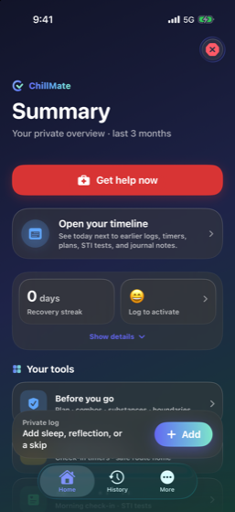

Deutsch
Ein ruhiger, privater Ort, um auf dich zu achten.
ChillMate hält deine Logs, Reflexionen, Pläne, Erinnerungen und Sicherheitswerkzeuge in einer privaten Übersicht. Alles bleibt auf deinem iPhone. Kein Konto, keine Werbung, keine Tracker, nichts wird verkauft.
Noch nicht im App Store. Diese Seite verlinkt ihn, sobald es so weit ist.

Ein Blick hinein
Fünf Screens, und wofür sie da sind.
Start
Alles auf einen Blick
Deine Serie, dein Score und die Werkzeuge, die zu diesem Moment passen. Jetzt Hilfe holen bleibt oben angeheftet, damit Atmung, Grounding und ein Notruf nie etwas sind, das du suchen musst.
Panikhilfe
Ein Raum mit gedämpftem Licht
Ein reizarmer Ort bei Angst oder Unwohlsein. Starte den Atemtimer, geh die Grounding-Schritte durch, und ruf erst jemanden an, wenn du das willst.
Datenschutz-Übersicht
Eine ehrliche Karte deiner Daten
Was auf dem Gerät liegt, was in einem verschlüsselten Backup wäre, welche Health-Kategorien du erlaubt hast, und was ChillMate nie sendet. In der App, nicht nur in einer Erklärung.
Hilfe
Echte Anlaufstellen, offline
Krisentelefone, sexuelle Gesundheit, Drogen, LGBTQ+ Unterstützung und praktische Hilfe für das Land, das du einstellst. Eine Liste auf deinem Handy, also auch ohne Empfang.
Mehr
Nichts versteckt
Profil, Einstellungen, Datenschutz, Notfallkarte und Hilfe an einem durchsuchbaren Ort statt verstreut in Menüs.
Was es kann
Privates Log
Halte eine Nacht so fest, wie du sie erinnern willst: Schlaf, wie es dir ging, und was danach geholfen hat.
Deine Muster
Ansichten über dreißig und neunzig Tage, was sich für dich wirklich ändert, nur für dich.
Care-Werkzeuge
Atmung, eine Pause bei Verlangen, ein Plan für eine sicherere Session, und ein Weg nach Hause, wenn du ihn willst.
Kombinationscheck
Hinweise in klarer Sprache zu Kombinationen, auch mit den Medikamenten, die du bereits nimmst.
Erinnerungen, die passen
Check-in-Timer, ein PEP-Fenster und Test-Erinnerungen, auf Wunsch diskret formuliert.
An deinem Handgelenk
Timer, Check-ins und eine Notrufnummer auf der Apple Watch, ohne zum Handy zu greifen.
Privat gebaut
Dein Handy, und sonst nirgends
Datenschutz ist hier keine Einstellung, die du erst aktivierst. So ist die App gebaut.
- Kein Konto, keine Anmeldung. Es gibt keinen Server mit deinen Logs, weil es keinen Server gibt.
- Keine Werbung, keine Analytics, keine Tracker, und nichts wird je verkauft oder geteilt.
- Sichere sie mit Face ID oder PIN, alles auf dem Gerät verschlüsselt.
- Backups sind optional und verschlüsselt und gehen in deine eigene iCloud Drive.
- Mitteilungen können auf dem Sperrbildschirm bewusst vage bleiben.
Wohin deine Daten gehen
Prüf es selbst
Glaub uns nicht einfach so
ChillMate ist Open Source. Jede Zeile, die deine Daten berührt, ist öffentlich, und das Versprechen oben ist eines, das du prüfen kannst statt es glauben zu müssen.
Im Code der App gibt es keinen einzigen Netzwerkaufruf. Kein Analytics-SDK, kein Crash-Reporter, nirgends eine URLSession. Dein Handy verlässt nur, was du selbst antippst: ein Anruf, ein Link, eine Nachricht, die du schreibst.
Es funktioniert, während das Handy in der Tasche bleibt
Dosis-Timer, Trinken, diskrete Check-ins, eine Atemübung und ein Anruf mit einem Tipp bei deiner Vertrauensperson oder dem Notruf, alles auf der Apple Watch, dazu Komplikationen für Zifferblatt und Smart Stack.
Es spricht deine Sprache
App und Website gibt es auf Englisch, Niederländisch, Deutsch, Französisch und Spanisch, und die Hilfsangebote richten sich nach deinem Land, nicht nach deiner Lesesprache.
ChillMate unterstützt Reflexion, Planung und dein Wohlbefinden. Es ersetzt keine Fachperson und entscheidet nicht, ob etwas sicher ist. Wenn jemand in akuter Gefahr sein könnte, ruf den örtlichen Notruf.